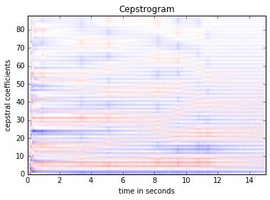

Results
We generated the MFCCs of each instrument and tone from the sample recordings and plotted a cepstrogram for each instrument. Then we flattened and normalized the MFCCs.
Trumpet

Vibraphone
Violin
We had 36 files of Trumpet, 41 files of Vibraphone, and 23 of Violin. For every file, only the first 2.5 seconds were imported into librosa (at a sample rate of 22050) and used to generate an MFCC with window size = 2048, hop size = 1024, and 88 cepstral coefficients. These cepstrograms are flattened, normalized with librosa (to control for variations in instrument volume across samples) and dumped to a binary file format. Then, the data was divided into a training set comprising 70% of the data and a test set with the other 30% (division was stratified by instrument). The training data is fed into a Support Vector Machine (SVM), where each vector was also given a category of (0, 1, 2), corresponding to (Trumpet, Vibraphone, Violin).
We then feed the other 30% of the data into the trained SVM model, and our results are such:
That was the result of our final attempt. Previous attempts tried to do similar things, for example without normalization, and also without truncating (but instead feeding the MFCCs cut by time index). Neither of those yielded good results either. Specifically, feeding the sliced MFCC data would probably not have worked in hindsight, since the cepstrum of an instrument is not independent of the time a note has been held on it.
Curiously, our model seems to overfit for trumpet every time.